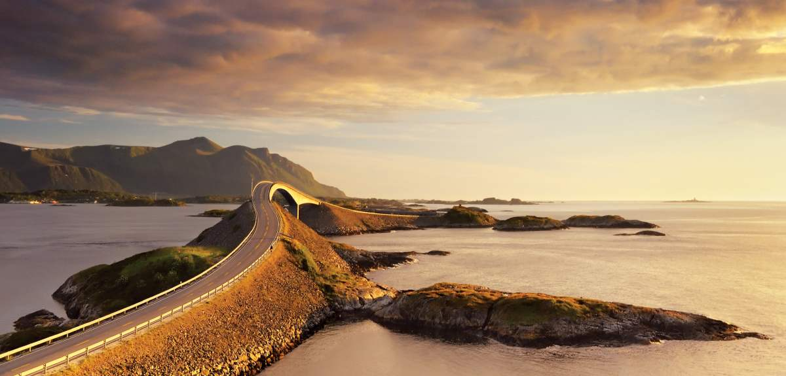
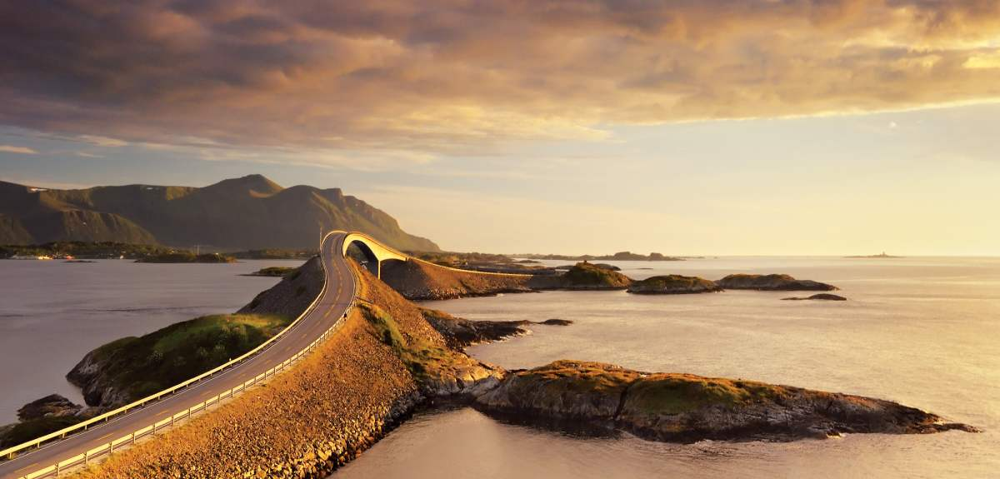

La segunda mayor ciudad de Noruega, Bergen, combina monumentos históricos Patrimonio de la humanidad, con moda innovadora, excelentes restaurantes y una escena musical en plena expansión. Visita alguno de los mejores museos del país, como el KODE, dedicado al arte y que incluye antiguas casas de famosos compositores noruegos. O da un agradable paseo por callejuelas de adoquines. O bien disfruta de las vistas de toda la ciudad desde lo alto de una de las siete montañas que la rodean. Bergen es la puerta de entrada a algunos de los fiordos más famosos de Noruega, como el Sognefjord, el más largo y más profundo del país, al norte; y el fiordo de Hardanger (o Hardangerfjord) —donde se encuentra la famosa meseta montañosa de Trolltunga— al sur. Muchos de los fiordos cuentan con brazos que son igual de hermosos pero menos concurridos. Desplázate hasta la aldea de Flåm a bordo del famoso tren de Flåm, uno de los viajes en tren más bonitos del mundo. Y si buscas diversión en un marco natural incomparable, visita Voss o Nordfjord.

La Cascada de las siete hermanas y muchas otras fluyen a raudales por las empinadas laderas de montaña que desembocan en las aguas de color azul brillante del fiordo de Geiranger (o Geirangerfjord). Este fiordo, el más famoso de toda Noruega, está protegido por la Unesco como patrimonio de la humanidad. La sorprendente ciudad modernista de Ålesund es un punto de partida perfecto para una aventura en los fiordos. El Noroeste es la zona que ocupa la parte norte de la Noruega de los fiordos y atrae a amantes del aire libre durante todo el año. Åndalsnes, la capital noruega del alpinismo, representa una base de operaciones ideal para explorar la zona. Rodeada por impresionantes cumbres y a tiro de piedra de famosos reclamos turísticos como la carretera de montaña de Trollstigen o la carretera del Atlántico, Åndalsnes es la última estación del tren de Rauma, otro de los viajes en tren más bonitos del mundo. En el Noroeste de los fiordos se encuentran también las localidades de Molde, famosa por su escena de jazz, y Kristiansund, conocida como la capital del pescado seco (o clipfish).
 

Los densos bosques, profundos valles y enormes mesetas montañosas del Este de Noruega son puntos de partida perfectos para muchas aventuras en plena naturaleza. En esta zona encontrarás algunas de las principales estaciones de esquí del país, como las de Geilo, Trysil o Hemsedal. Todas ellas garantizan montones de diversión durante todo el año, ya que cuando la nieve desaparece se convierten en destinos de primer nivel para hacer ciclismo o montar en bicicleta de montaña. Valdres, Hallingdal, Lillehammer y el valle de Gudbrandsdalen son excelentes destinos para venir en familia, y y cuentan con todos los ingredientes necesarios, desde parques de atracciones hasta granjas con mucho encanto y fantásticas rutas de senderismo. Lo mismo ocurre con Telemark, donde puedes salir a navegar por el canal de Telemark y disfrutar de unas vistas impresionantes de la región desde el monte Gaustatoppen. Los parques nacionales de Dovrefjell, Jotunheimen y Rondane ofrecen excelentes posibilidades para actividades al aire libre como montar en bici o hacer senderismo, rafting o escalada.

¿Listo para una aventura en plena naturaleza sin igual? Las islas Svalbard se encuentran en medio del océano Ártico, a medio camino entre Noruega y el polo norte. Aquí podrás participar en exóticas actividades al aire libre durante todo el año, y entre unos paisajes que son a la vez crudos y frágiles. Atrévete a dirigir un trineo tirado por perros, visita una cueva de hielo, apúntate a un safari en motonieve, o sal a cazar auroras boreales. Además de varios miles de osos polares, en este archipiélago viven también unas 3.000 personas. La mayor localidad de la zona, Longyearbyen, es un colorido centro urbano que cuenta con una gran variedad de actividades culturales, y con restaurantes y bares de un nivel similar al que podrías esperar en cualquier gran ciudad.

¿Qué ocurre cuando restaurantes de estrella Michelin y preciosas casitas de madera se mezclan con arte urbano de nivel internacional y un fantástico ambiente multicultural? Visita Stavanger y encontrarás la respuesta. La ciudad más grande del suroeste de Noruega es el lugar al que acudir para admirar obras maestras de la naturaleza como el fiordo Lysefjord o Preikestolen (la roca del púlpito). La zona costera de Jæren es un verdadero paraíso para los apasionados de la playa, ya que acoge algunos de los arenales más extensos de todo el país. También harán las delicias de los aficionados al surf y al kitesurf. Sigue la carretera del mar del Norte hacia Egersund y descubre numerosos pueblos y aldeas con encanto que brillan como perlas a lo largo de la costa. Un ejemplo es la pintoresca localidad de Sogndalstrand.


El Sur de Noruega es el particular paraíso estival de los noruegos, con preciosas playas, miles de islas y más horas de sol al año que casi cualquier otra zona del país. Pasea por callejuelas flanqueadas por casas blancas de madera en localidades costeras como Risør, Arendal, Grimstad, Mandal o Flekkefjord. O descubre la cuna de gran parte de las tradiciones y el folclore noruego en el valle de Setesdal. La ciudad más grande del Sur de Noruega es Kristiansand, en la que puedes visitar su ciudad vieja de Posebyen, comer delicioso pescado fresco, asistir a divertidos festivales o simplemente disfrutar del buen tiempo tumbado en su playa urbana. El zoo y parque de atracciones Dyreparken es una apuesta ganadora entre los más pequeños de la casa. Un corto viaje en coche desde Kristiansand te lleva hasta el faro de Lindesnes, el punto más meridional de la Noruega continental. En Lindesnes también puedes encontrar el impresionante restaurante subterráneo Under, el más grande del mundo de este tipo y merecedor de una estrella Michelin.